Exercise 5 - Hand-Written Digit Recognition
Submitted by Prasannjeet Singh
Contents
Converting the imported variables into desirable format:
As suggested in the assignment cell2mat() and reshape() is used to rearrange the given data so that fitcecoc() can be applied. I have also used cellfun() that allows us to apply a single function to all the items in a cell, which makes it easier to transform the data without using any for loops.
Normalizing
For normalizing the data between 0 and 1, the following formula was used:
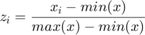
Where 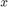 is the vector, and 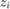 is the normalized value for the element 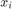. This can easily be obtained by using the function mat2gray(x).
Also, if we treat this dataset like any other dataset, we can observe that each row contains an individual set, and each column contains a unique feature. Therefore, all these columns will be separately considered and separately normalized.
% Loading and preprocessing the data load mnist.mat; img = cell2mat(cellfun(@(x) reshape(x,[28*28,1]),img,'UniformOutput',false))'; img_test = cell2mat(cellfun(@(x) reshape(x,[28*28,1]),img_test,'UniformOutput',false))'; % Normalizing each column: img_test = cell2mat(cellfun(@(x) mat2gray(x), num2cell(img_test,1),'UniformOutput',false)); img = cell2mat(cellfun(@(x) mat2gray(x), num2cell(img,1),'UniformOutput',false));
Training a Linear SVM using a Subset
For this section I'll use the first 1000 items for training and the last 500 for validating the model. The method templateLinear() creates a default linear-classification-model template, with Support Vector Machines (SVM) as linear classification model type. This model template is then passed as a parameter to the fitcecoc() function.
X = img(1:1000,:); y = labels(1:1000,:); Xt = img(end-499:end,:); yt = labels(end-499:end,:); t = templateLinear(); rng(1); % So that the answer remains same in every execution mdl = fitcecoc(X,y,'Learners',t); allSolution = predict(mdl,Xt); idx = allSolution ~= yt; totalError = sum(idx)
totalError =
35
As we can see, out of 500 test data, 35 were wrongly classified, which is a 93% accuracy. We can look at first 9 of those 35 items:
X = Xt(idx,:); y = yt(idx); allSolution = allSolution(idx); luckyIdx = 1:9; printX = X([luckyIdx],:); correctAnswer = vec2mat(y([luckyIdx]),3) calculatedAnswer = vec2mat(allSolution([luckyIdx]),3) hFig = figure(2); for i = 1:9 subplot(3,3,i); imagesc(vec2mat(printX(i,:),28)'); end snapnow; close(hFig);
correctAnswer =
9 3 10
4 2 10
3 8 5
calculatedAnswer =
4 8 5
9 8 7
8 1 9
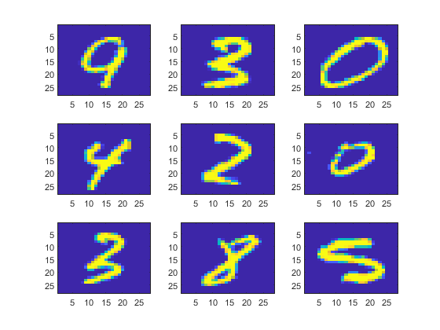 As we can observe from the observation above, although the accuracy of the model appeared to be 93 percent, even simple handwritings were miscalculated by the above model. This means we should improve the above model.
We can also see the digits this method had most trouble predicting correctly:
tabulate(y)
Value Count Percent
1 3 8.57%
2 4 11.43%
3 5 14.29%
4 5 14.29%
5 5 14.29%
6 1 2.86%
7 0 0.00%
8 2 5.71%
9 5 14.29%
10 5 14.29%
As per the above observation, digits 3,4,5,9 and 0 were the hardest to calculate, with a total of 5 errors each.
Finding an optimal model
As we know there are many Kernel Functions that can be used, but I have used rbf for in this assignment, as suggested in Slide 26 of Lecture 7. After I chose the RBF Radial Basis Function for this model, I was primarily left with to parameters to tune, which was BoxConstraint and KernelScale. My interpretation of the parameters:
- BoxConstraint (C): As we know that C controls the influence of each individual test item (penalty factor). A low value of C basically tries to ignore the 'outlier', or the 'noise' in the test items. Which is good for our model, because we would want to avoid all those numbers which were wrongly written by people. For example these two images:
[I,map] = imread('Data\badHandWriting.PNG','png'); imshow(I,map); snapnow;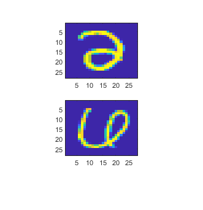
Here, the first image is 2, and the second is 6. These are clearly some outliers, and a lower value of C will give less weightage to these types of data sets.
- KernelScale (Gamma): We know that Gaussian Rdial Basis Function is: 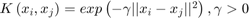. Since 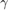 controls the similarity, and if is (let's say) 0, all the points will be treated as same. Likewise, if is set to 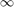, K(x,y) will be 1 if and only if x and y are identical, otherwise, it will be zero, i.e. the model will predict correctly only when the exact input (as in the training set) is provided. In other words, high may result in low variance and vice versa. Considering this, we can say that should be more, so that we can create a distinction between all the classes. Moreover, it should also be more because sometimes digits such as 9 and 4 look familiar in natural handwritings of different people. Such confusions can be there for many other pairs as well, therefore, it is important to have a comparatively higher value of so that a distinction can be maintained between them. However, it shouldn't be too high so that even a slight change in handwriting results in misclassification.
Although I know that k value should be relatively higher, and C value should be relatively low; I cannot predict any values without testing. Therefore, in this assignment, I have tried to quantitatively calculate the hyperparameters by testing many values in a subset.
Here, I will describe the steps taken by me to obtain the best possible hyperparameters. However, the code to obtain the same is saved in a separate m file TrainFinal.m which I have also included in the submission. Moreover, the results that I obtain from the training are also saved in Data/trainingResult.mat (if required).
- In the first step, first 100 items of training set were chosen for training, and last 100 items of the same training set were chosen for validation. No dataset for testing was chosen, as I did the testing after I got the best possible pair.
- Now all possible k and C combinations ranging from 1 to 100 were tested by using two nested for loops (10,000 iterations) in the subset chosen above, and total number of errors for each iteration was recorded in a k x C matrix (result). The lowest error that I found for 100 validation set was 20.
- Further, all the (k,C) pairs were extracted from the above matrix, which gave the least cost, and these (k,C) pairs were used to train a larger set of datasets (900) and a new validation set was also used.
- This time, only one pair of (k,C) gave the least error (52 errors in a validation set of 900), and the (k,C) pair was (6,1). This value follows the initial hypothesis, where I mentioned that k should be relatively larger and C should be low.
After getting the optimal pair, I trained the model for the whole 60,000 datasets and tested it for the whole 10,000 dataset by the following code (The lines are commented as they take long to execute. However, I have already performed them and will load them below for observations):
% params = templateSVM('KernelFunction','rbf', 'KernelScale',6,'BoxConstraint',1); % myModel = fitcecoc(img,labels,'Learners', params, 'Coding', 'onevsall'); % outputLabel = predict(myModel, img_test); %Predicted Class
myModel contains the model with above parameters and settings, where as outputLabel contains the predicted vector based on our model. Both these commands may take long to execute. These variables are therefore loaded below:
load Data/9844mdl.mat;
idx = outputLabel ~= labels_test;
totalErrors = sum(idx)
totalErrors = 156
Therefore, it can be seen above that there are only 156 errors in the above model. If we calculate the percentage, it comes out to be:
98.44 Percent
This value is better than my previous calculation in Assignment 2, where I got accuracy of 96.9% using k-NN (k=25) and 91.98% using Logistic Regression (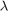=1). Moreover, it is very near to 98.84 percent, which is average human accuracy. (Difference of only 0.4 percent or 40 observations). Note that further tuning can also be done by running k from 5 to 7 (divided in 100 fractions) and C from 0.01 to 1 (divided in 100 fractions), as we already know that (6,1) give us the best result at the moment.
We can also see 9 of the misclassified images to get some more insight:
allSolution = outputLabel; X = img_test(idx,:); y = labels_test(idx); allSolution = allSolution(idx); luckyIdx = 1:9; printX = X([luckyIdx],:); correctAnswer = vec2mat(y([luckyIdx]),3) calculatedAnswer = vec2mat(allSolution([luckyIdx]),3) hFig = figure(3); for i = 1:9 subplot(3,3,i); imagesc(vec2mat(printX(i,:),28)'); end snapnow; close(hFig);
correctAnswer =
2 4 2
5 3 6
8 8 2
calculatedAnswer =
9 2 7
3 7 10
10 2 8
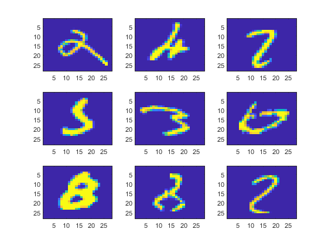 About the above observation: As we can see the image above almost all of them (except 4 in the first row and 8 in ithe last row) are hard to classify. Even we (humans) would need to put some effort if we want to correctly identify these numbers. Hence, all these values are essentially the noise which we were successfully able to ignore by using appropriate C value. However, there is futher scope of improvement because 4 and 8 were also misclassified.
The Confusion Matrix
The confusion matrix was plotted using the method plotconfusion() which is present in the neural network toolbox. And since it may not be available in all the systems, I am commenting the method execution below and directly loading the confusion matrix. However, the line can be uncommented if the aforementioned toolbox is installed. The confusion matrix image is saved in 'Data/confMat.jpg' in this folder.
targetLabel = labels_test; %True Class % Preprocessing the the data so that it can be usedin the plotconfusion() % method. outputMat = zeros(10,size(outputLabel,1)); targetMat = zeros(10,size(targetLabel,1)); for i = 1:size(outputLabel,1) targetMat(targetLabel(i),i) = 1; outputMat(outputLabel(i),i) = 1; end % plotconfusion(targetMat,outputMat); [I,map] = imread('Data\confMat.jpg','jpg'); imshow(I,map);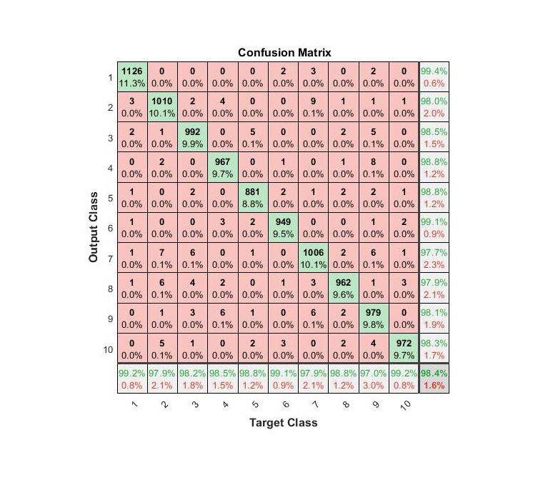
In the confusion matrix above, the labes in the Y-Axis are our Calculated Values from the model, where as the labels in the X-Axis are the Actual Values.
Nomenclature: For example, a value of 9 in the location-(2,7) (MATLAB Notation) means that there were a total of 9 instances where the number 7 was misclassified as 2. The red color background signifies misclassifications and green signifies correct classification. Notable points that can be taken from the confusion matrix:
- 1 and 0 are the two numbers which had the highest classification percentage (99.2%), with only 9 and 8 errors respectively. This is natural as 1 and 0 can be declared as two of the most simple shapes.
- 9 had the lowest classificaton percentage (97%), with a total of 30 errors. As predicted in the hypothesis, 9 was wrongly classified mostly as 4 (total 8 times) which is the one of the highest misclassificaton pair, second only to 7 being misclassified as 2.
- Probability of our model classifying the number 1 correctly was 99.4%, which is the highest probability amongst all other classes.
- Similarly, probability of our model classifying the number 7 correctly was the lowest with 97.7%.